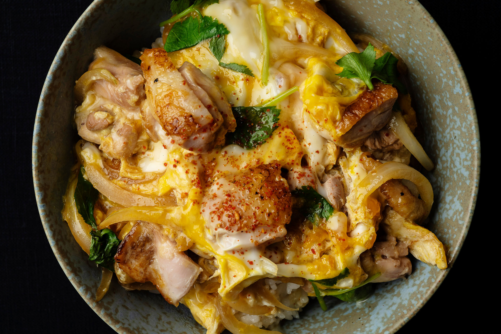

Smashed Avo

Japanese cafeteria style breakfast
Ingredients
- 6 tablespoons dashi (homemade or instant)
- 2 tablespoons dry sake
- 2 tablespoons mirin or aji mirin
- 2 tablespoons soy sauce
- 1/2 teaspoons sugar
- 2 skin-on chicken thighs, deboned (do it yourself or ask your butcher)
- 1 small onion, thinly sliced, lengthwise
- 4 eggs
- 6 sprigs of mitsuba, cut into 1-inch lengths, or 2 scallions, very thinly sliced on a sharp diagonal
- Short-grained white rice (often labeled sushi rice), cooked, for serving
- Shichimi togarashi (Japanese 7-spice chile pepper, sometimes labeled nanami) (optional)
Recipe
- Make the sauce: In a small bowl, combine dashi, sake, mirin, soy sauce and sugar; stir to dissolve sugar. Set aside.
- Heat a small (6- or 7-inch) nonstick (or well-seasoned carbon steel) slope-sided skillet over medium-high heat. Brown the skin side of each piece of chicken until crisp, 3 to 4 minutes (meat will still be mostly raw). Transfer to a cutting board, skin-side down. Dice into 1 to 1½-inch pieces.
- Cook chicken and egg in two batches: In a small bowl, beat two eggs until yolks and whites are broken, but still distinct. Return skillet to medium-high heat, wiping out any excess grease. Add half the sliced onions and half the sauce (about ⅓ cup), and simmer for 1 to 2 minutes, until onions just begin soften. Add half the cut-up chicken; simmer for another 1 to 3 minutes, stirring, until chicken is white on the outside.
- Pour about half of the beaten eggs around the pan; let cook undisturbed for 30 seconds. Add the rest of the beaten eggs, and half the mitsuba or scallion. Adjust heat to low, and cook 20 seconds longer. Cover pan with a lid or foil and remove from heat. After a minute, uncover pan; eggs should be wobbly, but not raw (if they need more cooking, return the covered pan briefly to the heat).
- Carefully slide egg, chicken and sauce onto a bowl of cooked rice, trying to keep the mixture from flipping over. Repeat Steps 3 to 5 with remaining ingredients. Serve with shichimi togarashi, if desired.
Return to main page